The purpose of this document is to describe a very simple, yet realistic, use of Audiveris, so that you can get acquainted with some of its major features.
Nota: Your own experience on the same music sheet may vary because some parameters may have evolved, for example you may be using a different Neural Network definition file and therefore the glyph recognition may produce different results.
$> java -jar dist/audiveris-3.2a.jar
or, if for example you need more memory:
$> java -Xms128m -Xmx256m -jar
dist/audiveris-3.2a.jar
From the Sheet menu, select the Open item and in the dialog box which appears, select the chula.png file located in the examples folder.
This loads the image out of the selected file, and the application window now looks like the following. Note that the image width (2450 pixels) and height (1954 pixels) are listed in the log panel at the bottom of the window.
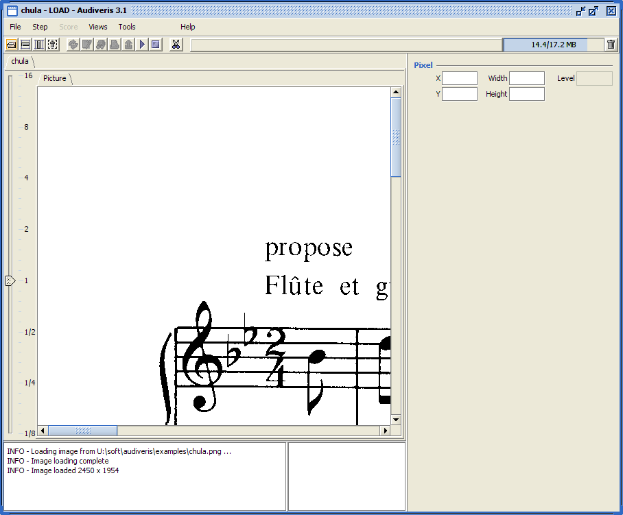
You may have noticed that the image contains a few words in French. Unless you have set French as the default language, Audiveris will assume that the dominant language in the image is English. So let's select the French language for this score, through the Score menu and its Set Parameters item.
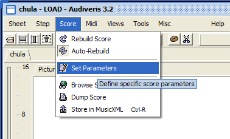
This opens a small dialog box about relevant score parameters. In
the Text section, select the "fra - French"
alternative. Notice also that you have the ability to make this
selection as the default for any score from now on, simply by
putting a mark in the checkbox.
You can skip the other parameters for the time being.
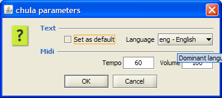
From the Step menu, directly select the SCORE step, as indicated below (the LOAD step has already been performed as indicated by the check mark, we want to go through all steps, down to the SCORE step):
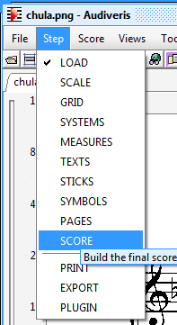
Audiveris will execute all the steps until the selected one. The user interface will evolve in parallel to the final view as in following picture.
Notice that the content of the Sheet view (the lower part of the display) has evolved:
You can have a look at the other tabs in the Sheet display:
The upper part of the window displays a synthetic view of the resulting score, on an ivory background, as translated from the extracted glyphs. If you can't see this view, make sure it is not collapsed, by dragging down the split line located just above the tabs.
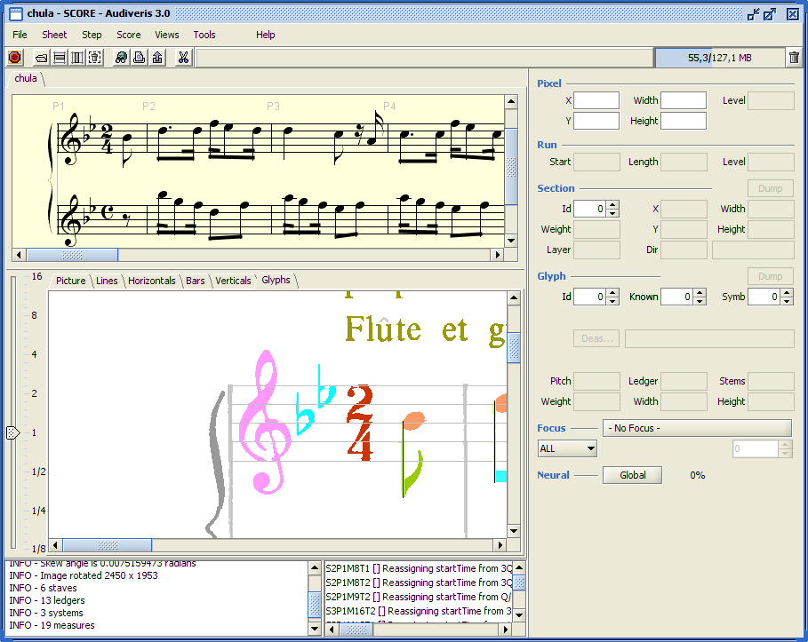
At the bottom of the application display, next to the log window, you should find the errors window similar to the following picture:
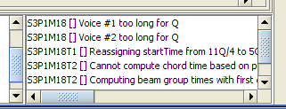
Nota, if you can't see it, make sure in the Views menu, that the item "Display errors window" is selected.
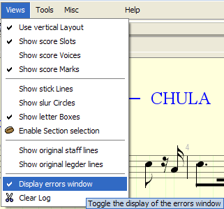
The first error message (Expected 3 chords for TUPLET_THREE) points to glyph #318, a character "3". The error stems from the fact that Audiveris has mistaken this character with a tuplet "3", and could not find the related three chords for this tuplet.
The correction is rather easy. We can simply deassign the symbol and let the program try to find another shape. The de-assignment can be triggered by pressing the Deassign button in the glyph board on the right side of the application window.
This error message disappears from the error pane.
You can notice that the program was unable to find another suitable shape for this symbol, since it is now displayed in red color. Notice also that the shape TUPLET_THREE is still listed at the top of the Neural Network suggestions, but the related button has a background colored in red, to indicate that this TUPLET_THREE shape is now "blacklisted" for this particular glyph. The program will never reassign this shape to the glyph, unless of course the user manually performs this assignment.
Actually this "3" is part of "31", likely to be a page number, which has nothing to do with our sheet of music. Since the "1" is assigned the CLUTTER shape, let's do the same for the "3". This shape is not directly suggested in the top 5 of Neural Network, so we have to select the glyph, and with a right-click open a context popup menu, select "Assign glyph as ...", then select "Physicals" shapes and finally "CLUTTER".
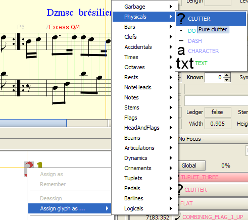
[Note that we could have skipped the "Deassign" action and directly "Assign" the final shape to this glyph. But this was a way to show an example of deassignment]
The next message says "S1P1M7 [] Voice #1 too long for Q/4"
This basically means that in the related measure, the total duration of the notes and rests that compose voice #1 is longer than the theoretical duration of the measure, and the delta represents the fourth of a quarter.
This time there is no direct indication of a "guilty" glyph. Clicking on this message moves us to the middle of measure 7 (of part 1 in system 1).
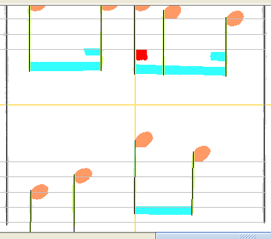
We can see that there is a beam hook left unrecognized (since colored in red) in this measure.
When selecting this glyph, the beam hook does not appear in the top 5 suggestions. We could manually assign the shape, using a right-click, "Assign glyph as..." and walk through the hierarchy of shapes as we did previously.
But we have another way, since there are other beam hooks in sight: we can make a "copy/paste" of the shape name.
Select another beam hook (left click), and in the popup menu (right click), select the "Copy BEAM_HOOK" item.
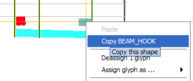
Then select (left click) the red beam hook glyph we want to assign, and in the popup menu (right click), choose "Paste BEAM_HOOK"
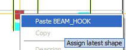
The next message says "S2P1M13] Voice #1 too long for 3Q/4"
The situation is similar to the previous error. Selecting this error moves us to the middle of measure 13 (of part 1 of system 2)
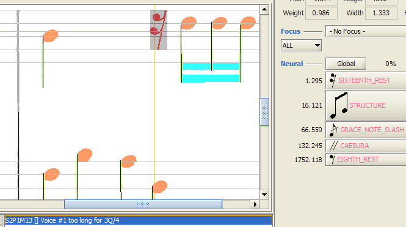
When we select the red glyph (a sixteenth rest), this time the SIXTEENTH_REST appears in the top 5. One click on the proper button, and the related shape is immediately assigned to the glyph at hand.
You may have noted that in this top 5, the sixteen_rest shape was listed with a red foreground color, to indicate that the confidence was too low. Actually the program uses the inverse of confidence, let's say a doubt, whose value (1.295) is above an acceptance threshold. You can also notice how fast the doubt value increases even within the top 5 suggestions, which is typical of the behavior of a neural network.
The errors pane is now empty. This does not mean there is no error left, but rather than the program has not detected any other error!
Look for red-colored glyphs in the sheet display, they indicate an unrecognized glyph.
There is one red glyph at the beginning of the score, it's a 2/4 time signature.

There are actually two glyphs colored in red: the upper left part (glyph #302, as selected in the picture above) and the bulk of the 2/4 signature (glyph #227).
You can notice that, even though these glyphs have not been recognized, the score display contains the right 2/4 signature. This is due to a rather aggressive strategy related to time signatures, whereby a well-recognized timesig is "forwarded" to the other timesig locations. This is the reason why no error was signaled.
For the sake of completeness (and also to show you a merge example ...), we'll however correct this glyph, by merging the two parts. To do this, either select the two glyphs one after the other (using the CTRL key when adding the second one), or use a "lasso" by dragging the mouse while pressing a SHIFT key (see following picture).
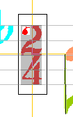
In both cases, a TIME_TWO_FOUR button should appear in the top 5. Simply press the button, and the proper compound glyph will be assigned this 2/4 shape.
There is another red glyph around the lower right corner of the sheet. This glyph is composed of two symbols (a flag and an eighth rest) stucked together. Pixels that are horizontally or vertically connected define a glyph. Here, we need a way to split this large glyph into two parts.
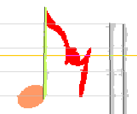
A new feature of Audiveris is the ability to manually compose a glyph by selecting its desired sections, in the containing LAG.
A short side note about LAG ((Line Adjacency Graph):
Normally, user selections are performed at glyph level. We can switch to selection at section level, in the Views menu, using the "Enable section selection" item. Only vertical sections can be selected for the time being. A more direct way is to use the toggle button, in the toolbar, which represents a bean.
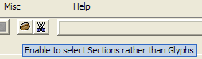
In section-based selection mode (see next picture), note that all the section boundaries are made visible. Using the left mouse button, while pressing down the CTRL key, allows the user to select as many sections as desired.
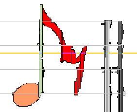
Since sections are usually small, the selection gesture is a bit simplified: You don't even have to release the mouse button when moving from one section to the other, simply browse the sections as you would do with an eraser, and all the touched sections will be added to the selection in a "greedy" mode. To really remove a given section from the current selection, release the mouse button and press down the button again on the section to remove (always keeping the CTRL key down).
Note, as you select the sections of the "eighth rest" portion of the glyph, that the Neural Network continuously tries to recognize a shape out of the selected sections. When you have selected all the sections that compose the eighth rest, the EIGHTH_REST button should appear in the top 5. Simply click on the related button, and the shape is assigned to a new glyph composed of the selected sections. [You can also, when your section selection is ready, use a right click to open the context popup menu and use the "Assign glyph as ..." item.]
Immediately, the remaining part of the former "big" glyph is recognized as a flag.
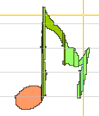
You can switch back to the normal glyph-level selection mode
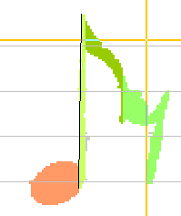
The recognition of textual glyphs is delegated to a companion tool, the Tesseract OCR engine. No tool is 100% perfect and Google makes no exception here...
The word "propose" (glyph #714) has been OCR'ed as something like "pI'Op0 SC", even though we had selected the right language for the score. We are left with manually forcing the text content:
Remark: A text glyph, even with proper content, needs to be assigned a "role (direction, title, creator, etc) to be atranslated to a score entity. Otherwise, it will appear in the score display, but with a gray color, and will mot be exported into the XML output.
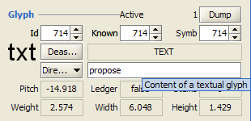
Also, on the upper right side of the sheet, the notation "Danse brésilienne" (glyph #720) has been OCR'ed as "Dzmse brésilienne". Once again, just correct the text content in the glyph board, validate by pressing the Enter key, and the modification is done.
You can decide to store the script of your user actions related to 'chula' sheet, by selecting the Store script item in the Sheet menu.
Select the location, and your script is written by default as chula.script.xml file.
Note that, unless you have set the application constant script.ScriptActions.closeConfirmation to false in the Tools|Options menu, if you close the current sheet without saving your script first you will be asked for saving the related script of your actions:
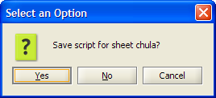
Here is the content of chula.script.xml:
You can replay any script, by simply selecting the Open script item in the Sheet menu, and choosing a script file.
For example, just choose the script you've just stored, and watch 'chula' image be reloaded, the various steps performed, and the series of your manual actions done again. From that point on, you can make additional actions through the user interface, these actions will be added at the end of the sheet script. It's a convenient way to work again on a previous session for example.
If you are curious, have a look at the 'chula.script.xml' file, which is a simple xml file where all your actions are easily recognized. Note that glyphs are defined only by the set of their member sections.
In order to write down the score using MusicXML format, or to play or write Midi information, the score needs some global information to be assigned beforehand. The user is prompted for these parameters through the following dialog window:
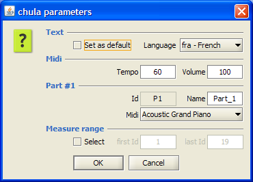
Note that there are generally acceptable values for all the fields.
If we are rather satisfied with the final translation, we can write the result into a MusicXML file.
In the Score menu, we select the Store in Xml item which presents a dialog box to choose a target file.
We finally click on the Record button, et voila!
Here is the content of chula.xml:
There is now a simple MusicXML/Midi interface, a Java open source program named XenoPlay (see the XenoPlay website), embedded within Audiveris. It allows a simple playback of the score through the platform Midi engine, as well as the writing of Midi files.
All Midi features are available in the Midi menu, and some
of them are directly callable from the tool bar:
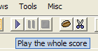
There are three icons, the left one for starting/restarting the playback, the middle one for pausing and the right one for stopping.
During the playback, the Score display is kept in sync, using a
moving (violet) vertical bar on the current time slot:
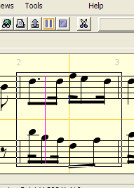
You can play the whole score or just a specific measure range of the score. The selected range can be defined through the score parameters dialog.
You can also point in the Score display with a right-click on a specific measure and in the popup menu, select the "Play measure" item as shown in the picture below. This is a contextual menu which shows the selected measure, information about the selected slot in the measure, and possibly the selected chord(s) and voice(s) in the slot.
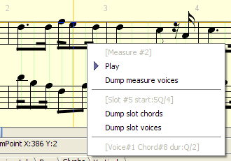
Nota: Using the integrated Midi player has some limitations, due to the embedded MusicXML/Midi software which is more like a demo and does not yet handle repeat signs or similar coda information.
Writing MIDI information into a Midi file is available through the Midi menu, using the Store in Midi menu item.
You are prompted for selecting an output file, and the Midi information is written using Midi format 1.
We can simply connect another tool, thanks to the emerging MusicXML standard. For example you can download a free demo version of Finale 2010, which among other features correctly handles the repeat signs, and more.
Within Finale application, in the File menu, use its Music XML | Import item, and get a display of our score. Then, press Play button, and listen!
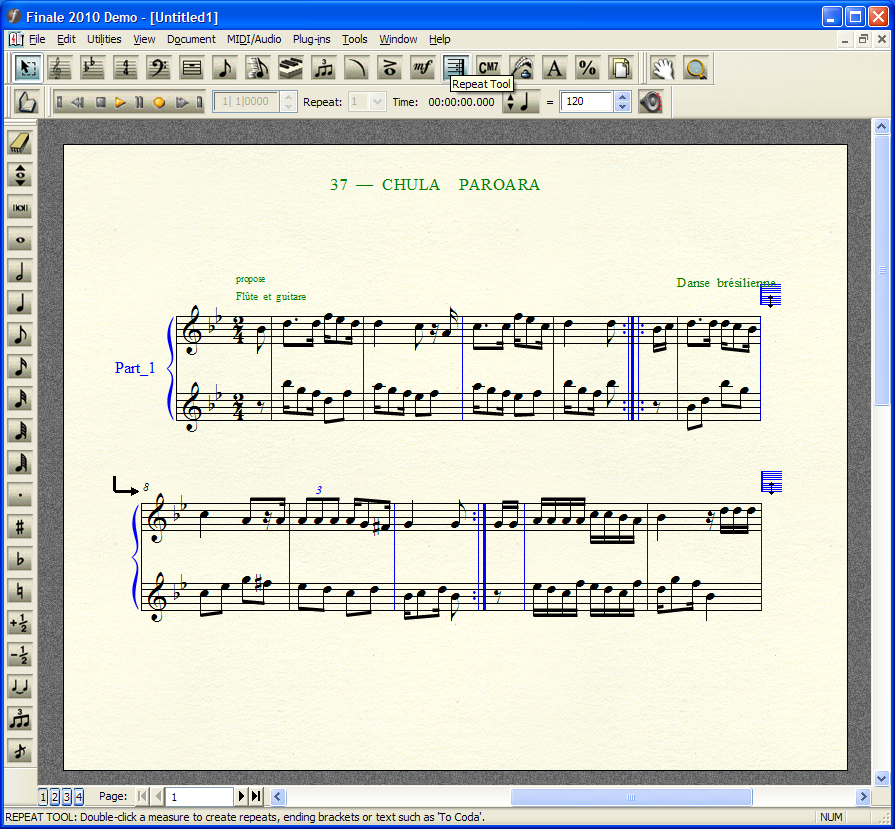